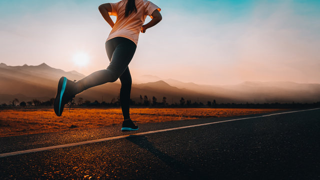
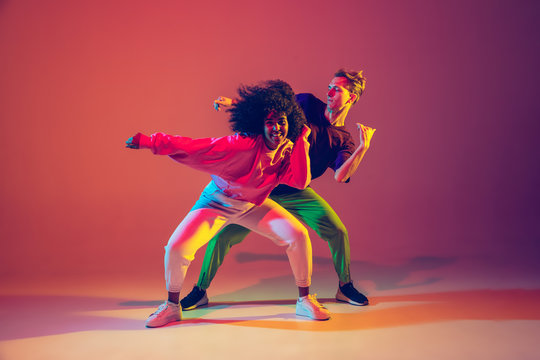
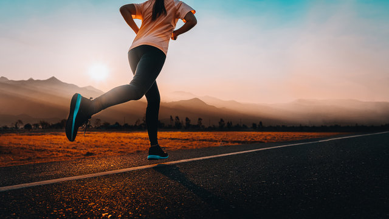
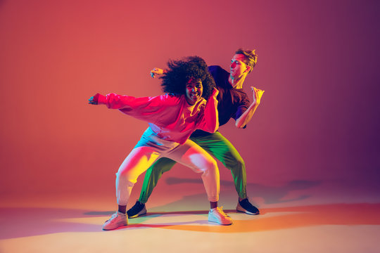

- Cycling: Riding a bicycle can be an intense cardio workout. Cardio is much more likely to improve your stamina!
- Running intervals: If walking alone isn't enough to improve your stamina, you could add running intervals to your regimen.
- Dance: The fast movement required for dancing results in an intense aerobic workout, which has been shown to increase stamina.
 


